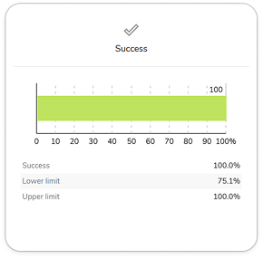
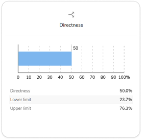
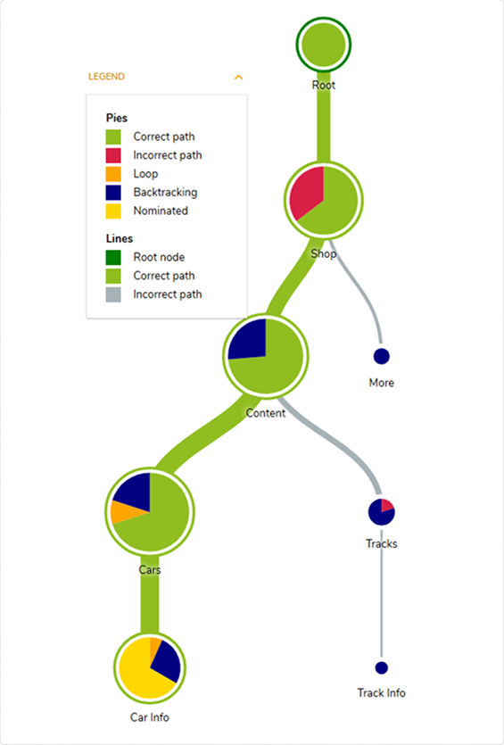

View Skeleton
View Skeleton“You realize that, to drive in the race you picked and like, you have to buy the car to take part. Where would you go to buy the car?”
Statistics
Summary of the task’s success
Direct success. The user went straight to the correct answer.

Indirect success. The user took a different path and backtracked before going to the correct answer.
Direct failure. The user went straight to an incorrect answer.

Indirect failure. The user took a different path and backtracked before going to an incorrect answer.




Pietree
Visual representation of the user’s path
 Go to Statistics
Go to StatisticsThe user went in the right direction.

The user went in the wrong direction.
The user interacted with a node again (closed or reopened it). A sign of doubt.
The user went back. A sign they didn’t find what they were looking for.

The user nominated this node as the correct answer.

The user skipped the task at this node.
